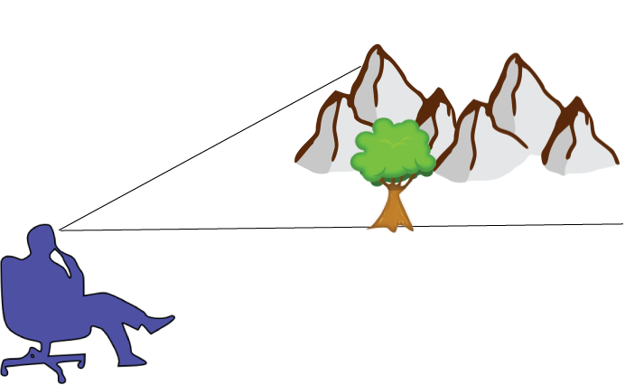
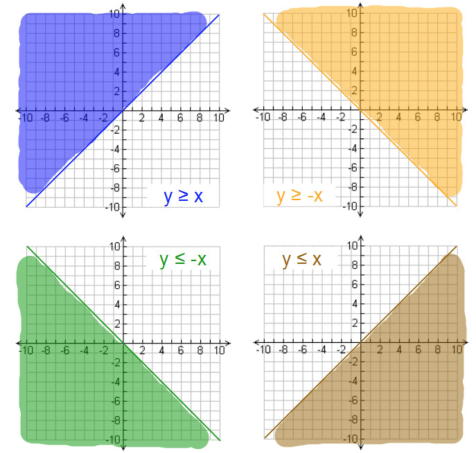

Math Concept Clues is a review game that focuses on math terminology, concepts, formulas, and procedures. The objectives of Math Concept Clues are to learn a new game and follow the rules, to review important math skills and content, and to learn good sportsmanship.
Description
Students will be assigned to one of two teams. As a group, members from each team will decide on a team name. Each team will take turns selecting a clue-giver who has one minute to describe a math concept and get his or her teammates to name it correctly. For example, for the concept “Midpoint,” the clue-giver may give the following clue: “A point that divides a line segment in half.” If anyone says “midpoint” before the time runs out, the clue-giver’s team gets a point. Members from the opposing team must pay attention quietly, because they will have a chance to name the concept and to earn a point if the clue-giver’s team fails to name it correctly in the allotted time.
Objectives
The objectives of Math Concept Clues are to learn a new game and follow the rules, to review important math skills and content, and to learn good sportsmanship.
Materials
Large index cards
Timer
Buzzer
Clue Cards
On each index card, I will write a math term or the name of a concept, formula, or procedure that I want the class to review. I will sketch or paste an illustration of the concept to help students remember what it is. I will also add “Extra Help” clues on the back, which will include key words or phrases that will help students who are struggling with describing their concept.
Clue-giver and Moderators
The clue-giver will sit at a desk or table at the front of the room. I will construct a barrier so other students cannot see the clue card. Two moderators from the opposing team will sit on either side of the clue-giver. Their jobs are to keep track of the time, make sure the clue-giver does not say the actual name of the concept, and tally the points.
I will select a new clue-giver and two new moderators at random for each round. I will alternate between the two teams. Because there are two moderators for each round, students will moderate twice as many times as they will give clues.
Rules
All students must treat teammates and members of the opposing team with respect and kindness. If a student is mean, disrespectful, or obnoxious toward anyone, that student’s team will receive a foul and lose a turn.
If the clue-giver’s team correctly names the concept in the allotted time, the clue-giver’s team earns a point.
If the clue-giver does not use the “Extra Help” part of the card, his or her team earns an additional point if they name the concept correctly before the time runs out.
If the clue-giver says the name of the concept, the moderator will sound the buzzer. The opposing team then has a chance to name the concept for a point.
If the clue-giver’s team fails to name the concept before the time runs out, the opposing team has a chance to name it for a point.
If a member from the opposing team shouts out the answer before time runs out for the clue-giver’s team, the point is awarded to the clue-giver’s team.
Variation
Another way to play this game is to create Clue Cards that have the concept name and description without any illustration. Instead of describing their concept in words to their teammates, students draw a picture on the board to represent their concept. Students can label the picture but must omit the name of the concept. Students cannot give verbal clues in this version. Teammates have one minute to guess the name of the concept based on the drawing.
I created this game using the Jeopardy template for Power Point® to help students review solving systems of linear equations. Divide the class into teams and play for a prize (extra credit points or homework pass).
Welcome to the Life Application webquest for the Pythagorean Theorem. Your mission has three phases:
Phase 1: Consider a real-life scenario. Break down the problem by drawing a diagram to show known and unknown information and by researching possibilities to satisfy the criterion.
Phase 2: Create a table to organize your information. Synthesize and evaluate all possible solutions against given criterion and propose a solution.
Phase 3: Create your own problem that requires the Pythagorean Theorem. Include at least one criterion that requires gathering information to compare and contrast two or more options. Solve your problem.
Objectives
After completing the Life Application webquest, students will be able to...
Correctly analyze a given problem listing known information and unknown information.
Correctly gather information required to solve the problem given the Internet.
Correctly identify what the problem is asking them to find.
Correctly construct an expression using variables and numeric values to represent the value they need to find.
Correctly calculate the value they need to find.
Correctly organize their calculated and gathered information into a table.
Adequately propose a solution to the problem given the information in their table.
Adequately create, develop a plan for solving, and solve an original problem.
Life Application Phase 1: The Problem
Your neighbor offers to pay you to complete a landscaping project for him. The money he offered will cover your final payment for your senior trip to Florida or the new gaming system you’ve been wanting. The project involves researching the sizes of trees that he likes and selecting and planting one that best meets his criterion.
The criterion is that the tree must not block his view of the mountains when it is full grown. The neighbor must be able to see over the top of the tree when he sits on his back patio. The distance from the ground to his eyes when he is seated is 4 feet. The distance from his patio to the end of his yard, where he wants to plant the tree, is 100 feet. The distance from his gaze, which is about 30 degrees above the horizontal, to the tops of the mountains is 115 feet.
The tree obstructs the man’s view.

The man sees the mountains.
Answer the following questions under Phase 2 of your worksheet.
Create a table of values to compare and contrast the different trees with respect to your neighbor’s criterion.
Enter the name of each tree.
Enter the maximum height for each tree.
Create a formula for calculating the distance from the top of each tree to the top of the mountains relative to the man’s gaze.*
Enter the distance from the top of each tree to the top of the mountains.
Select and recommend a tree for your neighbor. Which one did you choose and why?
*The distance from the top of a tree to the top of the mountains relative to the man’s gaze will be the amount of mountains that the man is able to see above the tree if the tree grows to its maximum height. Don’t forget to consider the 4 feet from the ground to the man’s eyes when calculating this figure.
Life Application Phase 3: Create Your Own Problem
In this final phase, you will create your own real-life problem that requires the Pythagorean Theorem to solve. Follow the instructions under Phase 3 of your worksheet.
Review the following websites for ideas but create an original problem scenario.
Create an original problem scenario. Include at least one criterion that requires gathering information to compare and contrast two or more options.
Solve your problem by breaking it up into manageable chunks. Draw a diagram showing known and unknown information, create a table to organize your information, and use your table to analyze your information and find a solution. Defend your solution by showing all of your work. Attach any additional paper that you need to solve the problem.
Pythagorean Theorem History and Proof Webquest
Welcome to the History and Proof webquest for the Pythagorean Theorem. Your mission has three phases:
Phase 1: Read about Pythagoras, tell a little bit about his life, and paraphrase how he discovered the proof.
Phase 2: Apply the Pythagorean Theorem given values to plug into the formula.
Phase 3: Evaluate three proofs of the Pythagorean Theorem and select one to paraphrase and reconstruct.
Objectives
After completing the History and Proof webquest, students will be able to...
Correctly demonstrate knowledge of the life and work of Pythagoras.
Correctly apply the Pythagorean Theorem to solve numerical problems and word problems given the problems.
Correctly reconstruct a proof of the Pythagorean Theorem given several proofs to choose from.
Answer the following questions under Phase 3 of your worksheet.
List three proofs of the Pythagorean Theorem. Include the full name of the person who discovered each proof.
Evaluate one proof that, for you, is either is the most straightforward or the most interesting. Reconstruct the proof below. Defend the proof by drawing a diagram and using mathematical language to explain it. If you need graph paper, print out a sheet from Print Free Graph Paper. Attach any extra paper to the worksheet.
Scientific Notation Webquest
This webquest is a fun way for students to recall scientific notation and its purpose. After a lesson to help students recall how to convert numbers to and from scientific notation, students logged on to their school accounts and found two facts each containing a number that was either less than 0.001 or greater than 1000. Students then wrote the number in scientific or standard notation or both if the original number was in neither form.
Reflection
Some students were really involved in this activity and obviously had fun finding their facts. They found some really interesting ones such as the estimated number of blades of grass on the Earth, the number of gallons of water on the Earth, the radius of an electron, the number of individual M&Ms made per day, the number of people employed by McDonald's, etc. My students were very competitive and started competing for the largest and smallest numbers.
In this project students use their imaginations to create a building or outside space (e.g., park, zoo habitat, space station, museum, sports complex). There are four parts to this project: writing, drawing, math, and display. Students describe their construction through writing and drawing. They find the area of their construction in terms of an unknown value. All dimensions used to find the total area, whether length, width, or radius, must be represented by linear binomials. They display their work neatly and creatively on a poster board.
Through writing students describe how the sides of their constructions relate to one another or to another object to explain how they derived their linear binomial. Students also describe the purpose of the construction, how people will use it, and the benefits of the design (why did they choose a rectangular or circular layout?). The drawing shows the floor plan or plan of the grounds to show the arrangement of rooms or spaces. Students also label their drawings with the measurements and the names of the rooms or spaces.
You can see that students were very creative with this project. Some even created objects that were not buildings or outdoor spaces, as in the lollipop and picture frame projects shown below. More projects with close up pictures of the text and drawings can be viewed by downloading the slideshow provided below the images.
After a lesson on graphing linear inequalities, one student asked me if there was a pattern to the shading. He understood that the shading for a “greater than” inequality was above the line and that the shading for a “less than” inequality was below the line. What he did not understand was why some graphs had shading that extended to the left while others had shading that extended to the right. He asked if that had anything to do with the value of the slope. If the slope was negative, did that mean the shading went left?

I used this opportunity to show students the pattern behind the four basic types of inequalities. In this activity, students graphed the four basic inequalities with boundary line y = x on one sheet of paper. With the paper folded in half, they graphed the two greater-than inequalities on one side and discussed that the sign of the slope determined the “rightness” or “leftness” of the shading. Then students flipped the paper over and graphed the two less-than inequalities. Students then realized that it was the direction of the inequality and the sign of the slope that determined the “rightness” or “leftness” of the shading.
During my student teaching, one student who was an English language learner struggled with the different types of lines and their respective equations. To help him process and remember the similarities and differences of parallel, perpendicular, and coincident lines, I created a graphic organizer (after an example in the textbook) where students could model these three concepts verbally, visually, and with formulas. Not everyone took advantage of this, however, the ELL student did fill it out and proceeded to get every related question on the test correct.